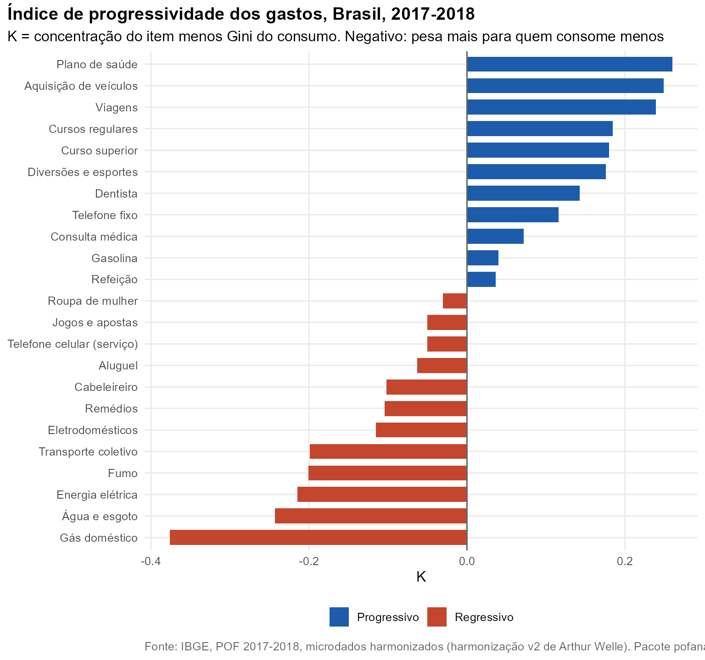
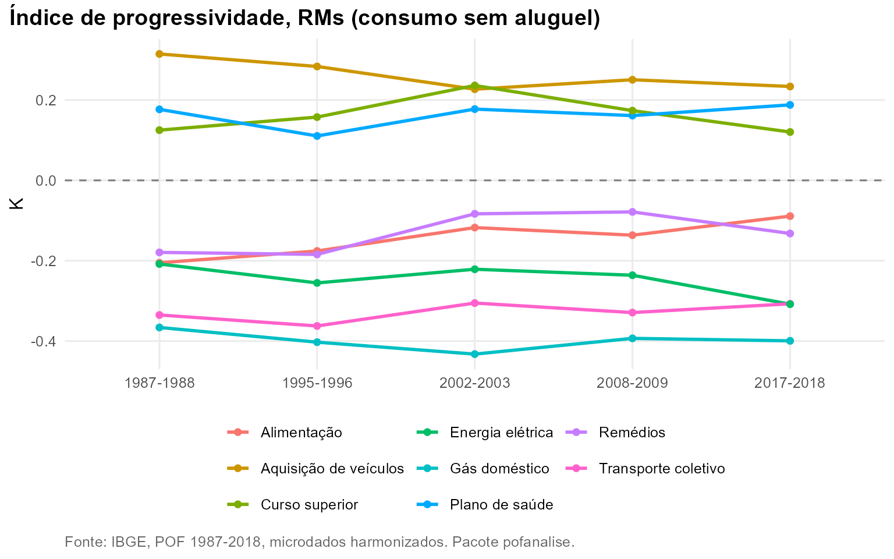

Pergunta. Quais gastos pesam mais no orçamento de quem consome menos, e quais se concentram no topo? A resposta interessa a qualquer política que mexa em preços: tarifa de ônibus, gás de cozinha, energia, impostos sobre consumo.
Método. pof_concentracao(). As pessoas
são ordenadas pelo consumo per capita e mede-se como o gasto com cada
item se distribui ao longo dessa fila. O índice K
compara a concentração do item com a do consumo total: negativo, o item
pesa mais no orçamento de quem consome menos (gasto
regressivo); positivo, pesa mais para quem consome mais
(progressivo). Brasil, despesa de consumo completa,
2017-2018.
Resultados
Os gastos mais regressivos são os serviços básicos da casa. Gás doméstico tem K = -0,38: os 40% com menor consumo fazem 32,7% de todo o gasto com gás do país. Seguem água e esgoto (K = -0,24), energia elétrica (-0,21), transporte coletivo (-0,20) e fumo (-0,20).
No outro extremo estão plano de saúde (K = 0,26, com 78,1% do gasto feito pelos 20% com maior consumo), aquisição de veículos (0,25), viagens (0,24) e educação privada. Remédios são regressivos (K = -0,10), ao contrário do restante da saúde: a assistência à saúde como um todo tem K = 0,05.

| Gasto | Tipo | C | K | Classificacao | Base 40% (%) | Topo 20% (%) |
|---|---|---|---|---|---|---|
| Gás doméstico | Item | 0,110 | -0,376 | Regressivo | 32,7 | 25,5 |
| Água e esgoto | Item | 0,244 | -0,243 | Regressivo | 22,9 | 32,0 |
| Energia elétrica | Item | 0,272 | -0,215 | Regressivo | 22,3 | 35,3 |
| Fumo | Item | 0,286 | -0,201 | Regressivo | 19,9 | 34,9 |
| Transporte coletivo | Item | 0,288 | -0,199 | Regressivo | 19,9 | 33,2 |
| Higiene e cuidados pessoais | Grupo | 0,293 | -0,194 | Regressivo | 20,7 | 36,5 |
| Eletrodomésticos | Item | 0,372 | -0,115 | Regressivo | 17,3 | 43,5 |
| Remédios | Item | 0,383 | -0,104 | Regressivo | 16,1 | 43,4 |
| Cabeleireiro | Item | 0,385 | -0,102 | Regressivo | 16,9 | 44,3 |
| Alimentação | Grupo | 0,402 | -0,085 | Regressivo | 15,3 | 45,4 |
| Vestuário | Grupo | 0,414 | -0,073 | Regressivo | 15,4 | 46,8 |
| Aluguel | Item | 0,424 | -0,063 | Regressivo | 15,7 | 48,6 |
| Serviços pessoais | Grupo | 0,433 | -0,054 | Regressivo | 14,3 | 48,4 |
| Telefone celular (serviço) | Item | 0,436 | -0,050 | Regressivo | 13,3 | 47,9 |
| Jogos e apostas | Item | 0,437 | -0,050 | Regressivo | 12,9 | 45,7 |
| Habitação | Grupo | 0,441 | -0,046 | Regressivo | 15,1 | 50,4 |
| Roupa de mulher | Item | 0,456 | -0,031 | Regressivo | 13,4 | 50,5 |
| Recreação e cultura | Grupo | 0,501 | 0,014 | Progressivo | 11,1 | 53,9 |
| Refeição | Item | 0,523 | 0,036 | Progressivo | 10,0 | 56,3 |
| Gasolina | Item | 0,527 | 0,040 | Progressivo | 8,7 | 55,8 |
| Assistência à saúde | Grupo | 0,540 | 0,053 | Progressivo | 10,0 | 58,3 |
| Consulta médica | Item | 0,559 | 0,072 | Progressivo | 8,5 | 59,6 |
| Educação | Grupo | 0,600 | 0,113 | Progressivo | 7,8 | 64,5 |
| Telefone fixo | Item | 0,603 | 0,116 | Progressivo | 6,2 | 63,4 |
| Transporte | Grupo | 0,625 | 0,139 | Progressivo | 6,5 | 66,4 |
| Dentista | Item | 0,630 | 0,143 | Progressivo | 6,2 | 66,7 |
| Diversões e esportes | Item | 0,662 | 0,176 | Progressivo | 5,5 | 69,8 |
| Despesas diversas | Grupo | 0,666 | 0,180 | Progressivo | 5,3 | 70,5 |
| Curso superior | Item | 0,666 | 0,180 | Progressivo | 2,8 | 68,8 |
| Cursos regulares | Item | 0,671 | 0,185 | Progressivo | 5,3 | 70,9 |
| Viagens | Item | 0,726 | 0,239 | Progressivo | 4,4 | 77,2 |
| Aquisição de veículos | Item | 0,736 | 0,249 | Progressivo | 3,0 | 77,7 |
| Plano de saúde | Item | 0,747 | 0,260 | Progressivo | 2,2 | 78,1 |
Ao longo do tempo
Nas regiões metropolitanas, com consumo sem aluguel, a posição dos itens é estável entre as edições: os mesmos gastos são regressivos em 1987 e em 2017.

Reproduzir
dados <- pof_carregar(c(2017), dir)
pof_concentracao(dados, c("f17103", "f17102", "f20101", "f22301"), recorte = "brasil", sem_aluguel = FALSE)